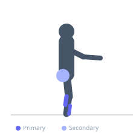

Exercise guide / Single-Leg Balance — Eyes Closed
Single-Leg Balance — Eyes Closed
Single-leg balance performed with the eyes closed removes the visual stabilization system from the balance equation, forcing the proprioceptive and vestibular systems to work in isolation. This is a significant progression from eyes-open balance and reveals the degree to which a person relies on vision for balance rather than sensory input from the ankle and hip. Used as a standard assessment and rehabilitation progression in ankle sprain, ACL, and vestibular rehabilitation programs.
Primary muscles
soleus
tibialis anterior
Secondary muscles
gluteus medius
gastrocnemius medial
Stabilizers
transverse abdominis
Equipment
No Equipment (Bodyweight)


Starting position
- Stand on one foot on a firm, flat surface. Have a wall or chair within arm's reach for safety. The eyes-open balance must be steady before attempting eyes-closed.
Setup
- Perform near a wall or chair for safety. Never begin with eyes closed on an elevated surface or balance pad. Begin on a firm floor.
Steps
- Step 1: Stand on one leg with the eyes open and establish a steady balance.
- Step 2: Once stable, slowly close the eyes.
- Step 3: Maintain the single-leg balance for the prescribed duration with eyes closed.
- Step 4: Open the eyes, rest, and repeat or switch sides.
Coaching cues
- Close the eyes slowly — do not snap them shut which disrupts balance
- Let the ankle work — small wobbles are normal and represent the proprioceptive system working
- Stay relaxed — gripping with the toes or bracing the whole body reduces the proprioceptive training benefit
Breathing
- Breathe normally throughout. Focus and calm breathing aids balance.
Range of motion
- Static hold. The goal is duration with controlled micro-adjustments through the ankle and hip.
Tempo
- Hold for 10-30 seconds per attempt. Build to 30 seconds before adding further challenge.
Common mistakes
- Closing the eyes before establishing stable eyes-open balance — the foundation must be solid first
- Tensing the entire body to compensate for the increased challenge — stay relaxed and allow the ankle to micro-adjust
- Performing this without safety nearby — a wall or chair must always be available
Safety
- ALWAYS perform near a wall or stable surface when doing eyes-closed balance
- If dizziness or significant loss of balance occurs, open the eyes immediately
- Not appropriate for patients with severe vestibular dysfunction without specialist supervision
Training
- endurance: 2–4 reps
- endurance: 2–3 sets
- Rest: {'endurance': 30}